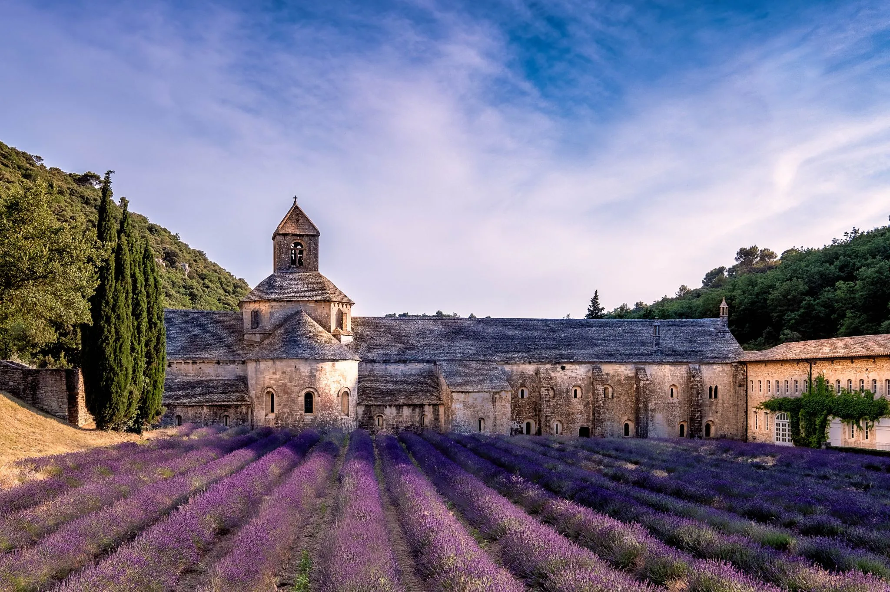
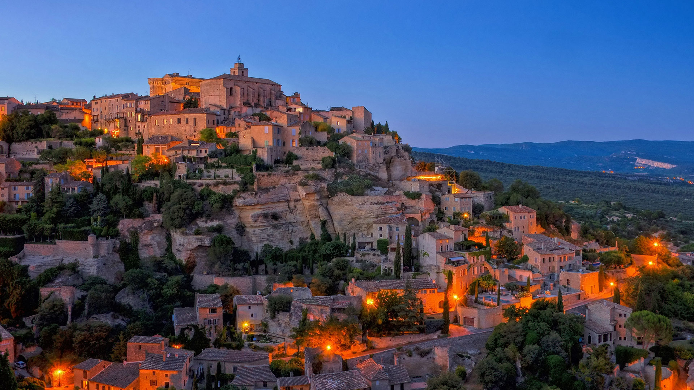
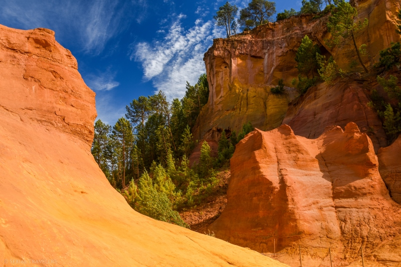
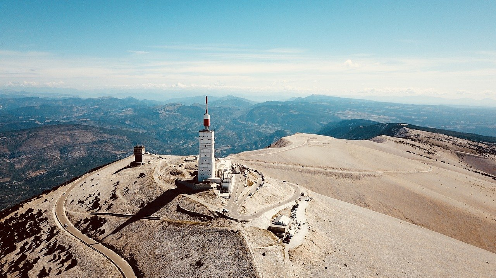

En train (facile et écolo !)
Arriver à Avignon TGV ou Avignon Centre
Prendre le car 915 : Avignon - Apt - Forcalquier - La Brillane
Ce car passe par Avignon TGV et Avignon Centre et s'arrête à Céreste
Le domaine est à 20 min de marche de l'arrêt de bus
Lien pour les horaires
En voiture
Venir au Domaine de la Barbeirasse, 04280 Céreste-en-Luberon
Toutes les voitures peuvent directement se garer au parking du domaine
Voici quelques suggestions de lieux à visiter sur la route :

L'Abbaye de Sénanque

Gordes

Le Colorado Provençal (Rustrel) / Le Sentier des Ocres (Roussillon)

Le Mont Ventoux